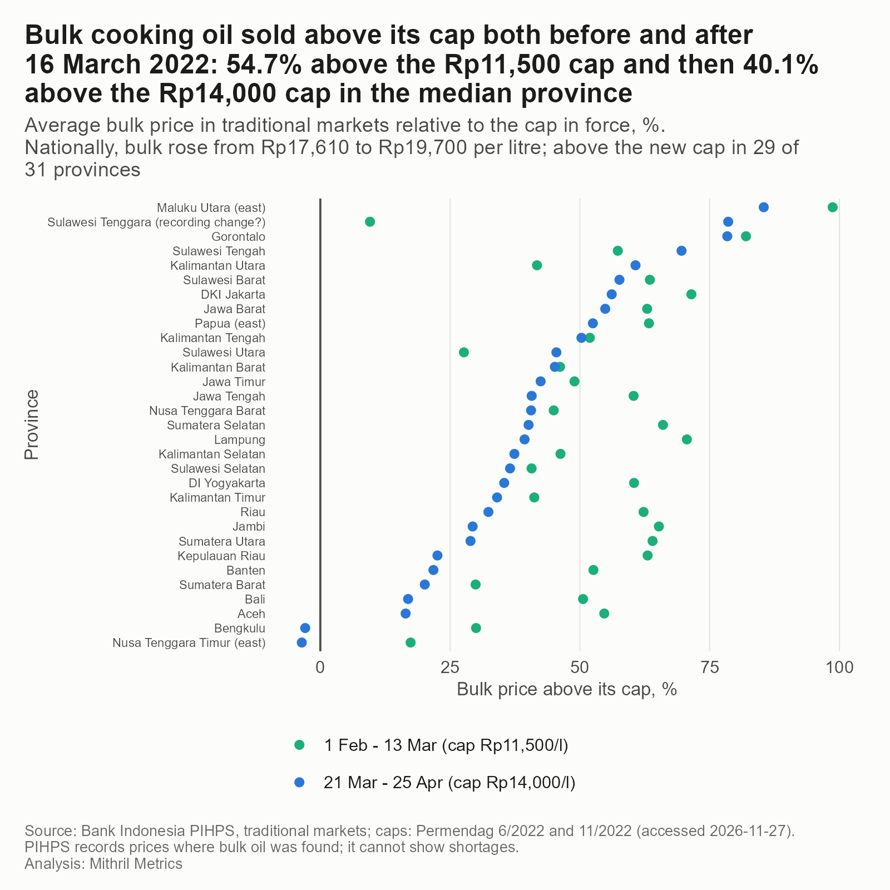
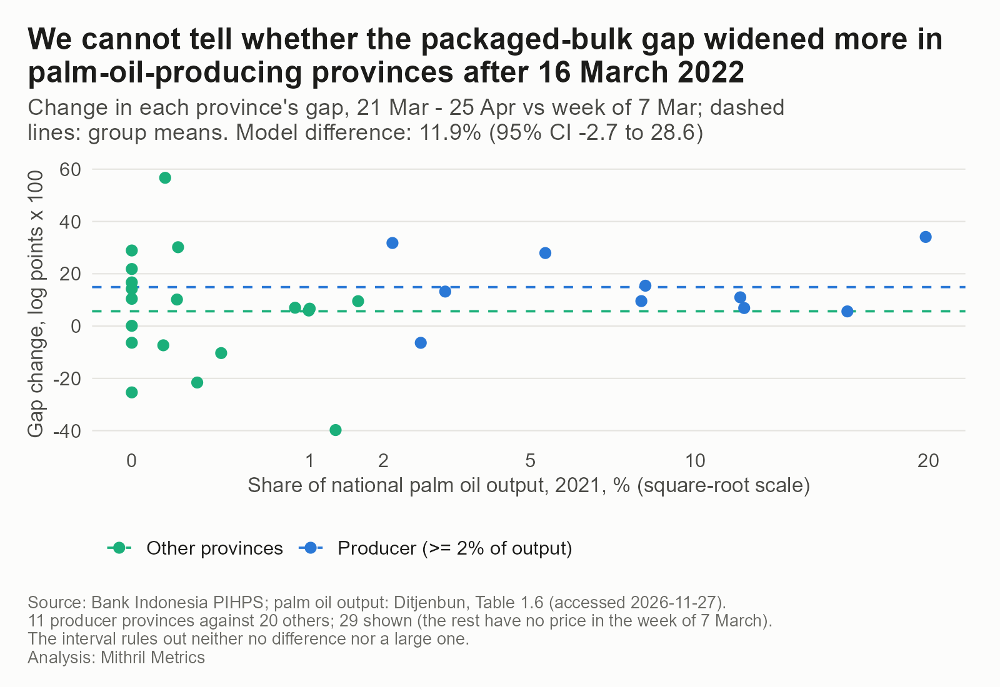

Short answer. In Indonesia’s traditional markets, branded packaged cooking oil cost 17.9% more than bulk oil in the week before its price cap was lifted on 16 March 2022, 31.2% more over the next six weeks and 45.9% more in June, a widening far larger than any comparable change in 2017-2021. Bulk oil did not stay at its cap: in the median province it sold 40.1% above the new Rp14,000 per litre cap, after 54.7% above the old one. The data show how far prices moved, not which of the measures taken that week moved them.
Why this matters now
Indonesia still caps the retail price of Minyakita, its cooking oil in simple packaging, at Rp15,700 per litre. In June 2025 Statistics Indonesia (BPS) found Minyakita above that cap in 441 of 493 districts. Since December 2025 part of its supply must go through the state food companies Bulog and ID Food, and in June 2026 the national average was still above the cap. The clearest recent record of what happens in traditional markets when one type of cooking oil is capped and another is not comes from March 2022, when Indonesia lifted the cap on packaged oil and kept a higher one on bulk oil. Sources: Bisnis, citing BPS, June 2025; Katadata, December 2025; RRI, June 2026.
What we did
We compare the price of branded packaged oil with the price of bulk oil in the same province and week, so that shocks hitting both oils alike (world palm oil prices, the rupiah, local demand) cancel out, and follow how this gap moved after 16 March relative to the week of 7 March. We use Bank Indonesia’s weekly prices from traditional markets in 31 provinces, October 2021 to June 2022, per litre like the caps. Every province switched in the same week, so to judge whether the change was unusual we compare the national monthly gap with every change of the same length in 2017-2021. The main tests were fixed before we saw results; later checks are labelled exploratory.
What the data show
Bulk oil sold well above its cap before and after the switch

In the median province bulk oil sold 54.7% above its Rp11,500 cap from 1 February to 13 March, and 40.1% above the new Rp14,000 cap from 21 March to 25 April. It was above the new cap in 29 of 31 provinces, and the national average rose from Rp17,610 to Rp19,700 per litre. While both caps applied, branded packaged oil also sold 42.4% above its own cap, so in traditional markets lifting that cap removed a rule that was not being met. The Rp100,000 monthly cash transfer announced on 1 April (Setkab) would have bought 7.1 litres of bulk oil at the cap, but 5.1 litres at the average price in late March and April.
Palm-oil-producing provinces: no clear difference

In the 11 provinces that each produce at least 2% of Indonesia’s palm oil, the gap widened 11.9% more over the six weeks than elsewhere, but the interval runs from -2.7% to 28.6% (p = 0.109). By June the difference was +6.0% (95% CI -8.0% to 22.2%). Before the switch the two groups moved alike (p = 0.452).
What this means for policy
- If a retail cap is meant to set what households pay, compliance in traditional markets comes first: in early 2022 neither cap was met there even while both applied. A tighter cap may draw supply away from these markets (not tested here).
- If a two-tier system, a capped cheap oil next to an uncapped branded one, is meant to protect lower-income buyers, the capped oil has to be sold near its cap; otherwise a fixed cash transfer buys less of it than planned. We assume, but do not observe, that bulk buyers are mostly lower-income households.
- If the aim is to monitor the Minyakita cap today, weekly prices by province and type of oil show within weeks how far each type sits from its cap; they cannot show shortages.
Caveats
- The gap measures everything that changed on 16-20 March 2022, not the cap removal alone: the bulk cap rose and bulk supply was subsidised, the palm oil domestic market obligation was scrapped and the export levy raised, amid the Ukraine-war spike in vegetable oil prices. The comparison with 2017-2021 shows the change was unusual, not what caused it.
- The six-week figure across provinces depends on whether the February trend under the caps would have continued; the national comparison with 2017-2021 does not.
- Ramadan (from early April) and the palm oil export ban (28 April to 23 May) fall inside the period after the switch.
- Bulk oil was itself capped and often scarce, so it is not an untouched control, and PIHPS records prices only where oil was found.
Data & code
- Bank Indonesia, Pusat Informasi Harga Pangan Strategis (PIHPS) Nasional (Traditional markets (price_type_id 1). Minyak Goreng Curah (bulk, com_17), Minyak Goreng Kemasan Bermerk 1 and 2 (branded refill pouches, com_18, com_19). Weekly by province and monthly national. Rp per litre (PIHPS FAQ). ), version Live database; daily survey of 2 traders in 2 markets in each of 82 CPI cities. Link
- Statistik Perkebunan Unggulan Nasional 2021-2023, Kelapa Sawit, Table 1.6 (Area and production by province and farming category, 2021; production in tonnes of CPO), version 2021 figures, Table 1.6, pp. 13-14, accessed 2026-11-27. Link
- Permendag 6/2022 and 11/2022 (retail price caps, HET) (Permendag 11/2022 signed and in force 16 March 2022), version As published, accessed 2026-11-27. Link
Code to reproduce every number and figure: GitHub. Technical note with more detail (PDF, 2-3 pages): brief.pdf.
Use of AI tools. We use Claude, an AI assistant by Anthropic, as a working tool: to help with coding, data retrieval scripts and first drafts of text. Questions, methods, robustness checks and conclusions are our own, every number is reproducible from the published code, and we review all text before it goes online.

Written by Pietro Sala. Views are the authors’ own. Part of Mithril Metrics: reproducible analyses of current agri-food, water and climate policy questions.